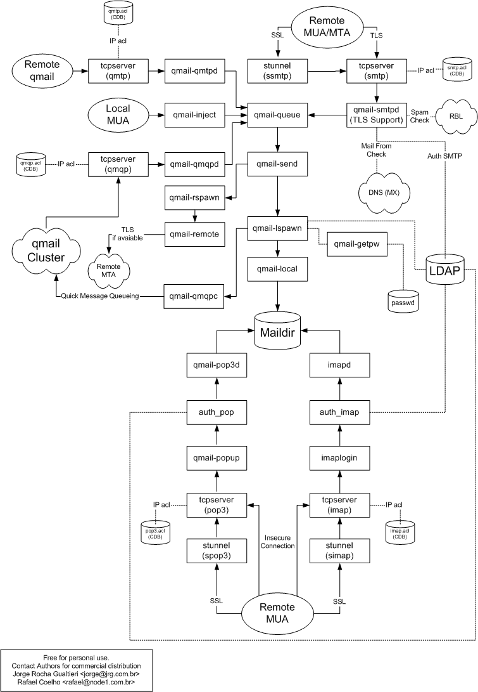

1. Availability
The newest version of this document is always at http://www.lifewithqmail.org/ldap/ in HTML format.
2. Introduction
This document will probably never be as comprehensively helpful as its inspiration, Life With Qmail by Dave Sill, and it won't explain the basics of qmail and ldap. It will explain the basic setup of qmail-ldap, but you must understand qmail and ldap to get qmail-ldap working.
qmail-ldap is a patch to qmail 1.03 to retrieve all user data from a ldap-directory rather then from files on the disk. This allows easier administration, especially in distributed environments. There is also clustering support builtin making qmail-ldap very well suited for big mail installations at ISPs.
This document will attempt to give the Big Picture, which is most of what you need to get going; describe the components of qmail-ldap and how they fit together; provide illustrations of typical installations; and hopefully in the process field some of the more Frequently Asked Questions; but it is not intended to be a replacement for any of the existing qmail and ldap documentation; this is an introductory paper, to be read in sequential order, not a reference.
This fantastic piece of software was developed by Andre Oppermann and Claudio Jeker.
3. Other resources
3.1. Online Documents
Life With Qmail by Dave Sill
additional patches for qmail-ldap
Adfinis released phpQLAdmin, a web based administration tool for qmail-ldap, which is now maintained by Turbo Fredriksson.
A set of command line admin tools is available: http://www.enderunix.org/qldapadmin
3.2. Mailing-List
There's also a Mailing list, qmail-ldap@qmail-ldap.org. Subscribe by sending an empty mail to qmail-ldap-subscribe@qmail-ldap.org, unsubscribing works similar by sending an empty mail to qmail-ldap-unsubscribe@qmail-ldap.org.
If you post to the list, please make sure that you have read all available documentation, that you understand LDAP and qmail and to include all necessary information. This is at least your ~/control/* stuff, complete error description, and the logs. If this is really much, consider uploading the infos on a webserver and post the url.
There is a searchable archive. Please use it before asking the list. Another one is on http://marc.theaimsgroup.com/?l=qmail-ldap
4. short Intro to LDAP
4.1. Basics
Lightweight Directory Access Protocol, or LDAP, is a very useful tool in administration of large networks and organizations. It is a database that is highly optimized for read operations, up to ten times faster than SQL database systems. One of the best features of LDAP is the ability to store user accounts. A single account entry can be used for logging in to unix workstations, imap servers, access controlled web pages, and email account storage.
With the qmailUser schema and user accounts loaded into an LDAP server, Qmail-LDAP can be configured so that all mail servers in an organization can share this same account data. Qmail-LDAP supports message routing to the mailhost specified in each users account entry, even when all internal email accounts use business card style addresses such as user@company.com. There is no need to use internal addresses like user@mailhost1.company.com and convert them to user@company.com when mail leaves the intranet.
Using LDAP to store Qmail-LDAP email accounts requires either building an LDAP directory, or modifying your existing directory. Since Qmail-LDAP requires the administrator to have a prior understanding of LDAP, this section of the HOWTO does not deal with basic LDAP or unix topics. For those who are completely unfamiliar with LDAP directory construction and administration, there are excellent books available and there are searchable mailing list archives at http://www.openldap.org.
1. The first part of setting up the directory server to work with Qmail-LDAP is to add the schema. This is not required if you have disabled schema checking, however running an LDAP server with schema checking disabled is highly discouraged. How the schema is loaded depends on the server you are using.
4.2. Schema for OpenLDAP 1.2.x
Edit slapd.oc.conf and add the following schema.
objectclass qmailUser
requires
objectclass,
mail,
uid
allows
mailMessageStore,
homeDirectory,
userPassword,
mailAlternateAddress,
qmailUID,
qmailGID,
mailQuota,
mailHost,
mailForwardingAddress,
deliveryProgramPath,
qmailDotMode,
deliveryMode,
mailReplyText,
accountStatus
Restart slapd for changes to take effect.
4.3. Schema for OpenLDAP 2.x
Edit slapd.conf and add the following lines, of course to match your file locations:
include /etc/ldap/schema/inetOrgPerson.schema
include /etc/ldap/schema/nis.schema (required by inetOrgPerson.schema)
include /etc/ldap/schema/qmail.schema (found from the qmail-ldap patch,
copy it to your schema directory)
Restart slapd for changes to take effect.
4.4. Configuration
Now that you have the schema loaded, a little system configuration is needed. I am going to discuss virtual user accounts, meaning that there are no home directories or /etc/passwd accounts for users on the mail server. After all, this is a mail server and not a user playground.
This involves setting a few control files:
- edit /etc/passwd and add: vmail:*:11184:2110::/var/qmail/maildirs/:/bin/true
- edit /etc/group and add: vmail::2110
- mkdir /var/qmail/maildirs
- chown -R vmail:vmail /var/qmail/maildirs
- cd /var/qmail/control
- Create the following control files with specified contents in /var/qmail/control:
defaultdelivery:
./Maildir/
ldapmessagestore:
/var/qmail/maildirs
ldapgid:
2110
ldapuid:
11184
Substitute UIDs/GIDs and pathes if needed.
Note: If you are using Courier-Imap, this same vmail user can be used for accessing the maildirs.
4.5. Filling the Directory
At this point, you need to create the directory hierarchy and accounts. I will demonstrate how to do this from a newly installed directory server that has had nothing previously entered.
a. Use your text editor of choice to create an ldif. Modify according to your particular setup. The first block in the ldif must match the directory base that is defined in your slapd.conf file:
suffix "ou=company, c=CC"
Or if you already have a working directory, then you can just exclude the first block.
dn: o=company, c=CC
objectclass: top
objectclass: organisation
o: company
dn: ou=accounts, o=company, c=CC
objectclass: top
objectclass: organizationalUnit
ou: accounts
dn: uid=elvis, ou=accounts, o=company, c=CC
cn: Elvis Presley
sn: Presley
objectClass: top
objectClass: person
objectClass: inetOrgPerson
objectClass: qmailUser
mail: elvis@graceland.com
mailAlternateAddress: elvis.presley@graceland.com
mailAlternateAddress: the-king@graceland.com
mailAlternateAddress: theking@nirvana.org
mailHost: mailhost1.graceland.com
mailMessageStore: /var/qmail/maildirs/elvis
uid: elvis
userPassword: {MD5}X03MO1qnZdYdgyfeuILPmQ==
b. After you have created the file, load it into your directory with the ldapadd utility.
ldapadd -acrv -h ldap.company.com -D "cn=manager,dc=company,dc=com" -w managers_password -f my.ldif
See the ldapadd(1) manual page for more information.
5. The Big Picture

See also the qmail and qmail-ldap big pictures from the qmail-ldap homepage.
5.1. Components of qmail-ldap and how they fit together
5.1.1. qmail-queue
qmail-queue takes messages and places them in the queue. It always adds a "received"-line and does no further message inspection.
5.1.2. qmail-send
qmail-send handles messages placed in the outgoing queue by qmail-queue and uses qmail-lspawn for local deliveries and qmail-rspawn for remote deliveries. qmail-send will reschedule all messages in the queue for immediate delivery.
5.1.3. qmail-todo
qmail-todo does the mail preprocessing to reduce the work load in qmail-send. With qmail-todo the overall performance on high throughput mail servers is far better because of the so called "silly qmail syndrom" caused by a over loaded qmail-send process.
5.1.4. qmail-lspawn
qmail-lspawn looks up the user for a mail to be delivered locally and invokes qmail-local to perform it.
5.1.5. qmail-local
qmail-local performs the delivery. It also handles the .qmail-files.
5.1.6. qmail-rspawn
qmail-rspawn invokes qmail-remote for remote deliveries.
5.1.7. qmail-remote
qmail-remote sends a mail to a remote host via SMTP.
5.1.8. qmail-inject
qmail-inject reads a message from its stadard input, adds headers and invokes qmail-queue to handle the delivery.
5.1.9. qmail-smtpd
qmail-smtpd normally listens on port 25/tcp and receives messages from remote hosts via SMTP.
5.1.10. qmail-qmqpd
qmail-qmqpd receives messages from remote hosts via QMQP, the Quick Message Queuing Protocol. It will relay _every_ message, so you must make sure only preauthorized hosts can connect. QMQP is used for in-cluster deliveries, if you want to use qmail-ldap's clusteriung you must set up qmail-qmqpd.
5.1.11. qmail-popup
qmail-popup reads username and password for POP3 from the network and invokes a subprogram (usually auth_pop) for authentification.
5.1.12. qmail-pop3d
qmail-pop3d is invoked from qmail-popup and handles the POP3-session.
5.1.13. auth_pop
Is normally invoked from qmail-popup to authentificate the user. It is also responsible for pop3-session forwarding inside a qmail-ldap cluster.
5.1.14. auth_imap
As auth_pop, but for IMAP. Handles also session forwarding.
5.1.15. qmail-ldaplookup
Is a tool to check if your ldap setup is correct. Use qmail-ldaplookup -u [uid] or qmail-ldaplookup -m [mail address].
6. Additoinal Software
6.1. daemontools
Daemontools is a companion package, prerequisite to qmail-ldap. It provides some helper programs which assist in launching and managing daemons.
qmail-ldap is delivered with service run scripts in /var/qmail/boot that can often be used without any modification.
svscan does a vaguely similar job to the System V init: it
monitors jobs and ensures that they keep running. It's
normally started with the directory /service, and each
subdirectory of that directory defines a service; they are
normally symlinks.
svc provides an interactive user interface for controlling
svscan; it takes an option like "-u" for up, "-d" for down,
or "-t" to take down and up again, followed by a service
name in the form of a path to a controlled directory.
Commonest case might be
svc -t /service/qmail-send
to restart qmail-send.
svstat tells the status of service. Just pass the path to a
controlled directory. For example
svstat /service/qmail-send
supervise is run by svscan to watch over a specific daemon, and
restart it if it dies.
multilog reads log data from stdin, optionally filters it, and
deposits the results into one or more logfiles, handling
rotation automatically.
More information can be found on the daemontools home page.
6.2. ucspi-tcp
UCSPI is the UNIX Client-Server Program Interface. It defines a command-line structure and environment variable specifications for inter-process communications helper programs; these make it easier to write clients and servers.
UCSPI-TCP is the specific variety of UCSPI for TCP applications; it specifies more details about specific environment variables and suchlike details.
ucspi-tcp is djb's package implementing UCSPI-TCP.
tcpserver
like inetd, only for a single service. An invocation
of tcpserver will listen for connections on a port, when one
arrives it will start a client program with args as
specified on the tcpserver cmdline, and with envars as
specified by UCSPI-TCP. tcpserver implements access-control
rules.
tcprules
compiles the access control rules for tcpserver into a cdb
database
tcpclient
A client helper program; does the setup for writing network
clients for TCP protocols, following the UCSPI-TCP
specification.
There is a SSL/TLS extension patch available for ucspi-tcp that is needed to support secure pop3 and imap connections. The patch can be found on the qmail-ldap home page.
7. Installation
Install ucspi-tcp and daemontools according to Appendix 1.
Get qmail-1.03.tar.gz from cr.yp.to. Get the patch from www.qmail-ldap.org. Unpack both, chdir to qmail-1-03. Patch the source tree:
patch -p1 < /path/to/qmail-ldap-1.03-xxxxxxxx.patch
Edit the Makefile to reflect your setup. You can change the following values:
ALTQUEUE
Enable the qmail-queue patch that makes it possible to select a different
qmail-queue program on runtime.
BIGBROTHER
For ISP that need to implement some surveillance method because of some
beloved authoroties (like here in switzerland), you can enable a per
address queue extra feature. See also the ~control/bigbrother file.
BIGTODO
Enables the big todo patch. Normaly not needed.
BIND_8_COMPAT
If the compile fails building dns.c because of undeclared defines this
may help. This is necessary on MacOS X 10.3.
CLEARTEXTPASSWORD (really bad idea)
Allows cleartextpasswords in ldap. Normally, passwords without prefix
are treated as crypt passwords.
DASH-EXT
Turns the dash extension mechanism on.
DATA_COMPRESS
Use smtp on the fly DATA compression if available. Needs the ZLIB options.
EXTERNAL_TODO
Run with the external high-performance todo processing. This avoids the
silly qmail syndrome with high mail injection rates.
IGNOREVERISIGN
Disallow dns wildchar matches on gtlds, thanks verisign.
QLDAP_CLUSTER
Compiles the clustering code in. Note: this doesn't mean clustering is
on, it just means you _can_ turn it on.
QMQP_COMPRESS
Use the QMQP on the fly compression for cluster forwards.
QUOTATRASH
Include the Trash in the quota calculation (normaly it is not).
SMTPEXECCHECK
Enable SMTP DOS/Windows executable and bad MIME attachement detection.
LDAPLIBS
Libraries you need for ldap, normally -lldap and -llber. On some systems
-lresolv is needed, too. If you have problems compiling, double check this.
For OpenLDAP, you typically have
LDAPLIBS=-lldap -llber.
For Netscape you'll need something like
LDAPLIBS=-L/usr/local/ldap/lib -lldap50 -llber50 -lpthread
LDAPINCLUDES=-I/usr/local/ldap/include
Don't forget to adjust the pathes.
LDAPINCLUDES
Path to ldap-includefiles, at least ldap.h and lber.h. If you have
problems compiling, double-check this.
ZLIB
ZLIB is needed for for -DDATA_COMPRESS and -DQMQP_COMPRESS.
If the zlib is installed in a non standard localtion ZINCLUDES should also
be set.
TLS
Enables SMTP encryption via SSL. You'll need OpenSSL.
Use -DTLS_REMOTE to enable tls support in qmail-remote
Use -DTLS_SMTPD to enable tls support in qmail-smtpd
TLSINCLUDES
Path to OpenSSL include files. If you have TLS enabled and compilation
problems, double check this.
Typical: /usr/local/include or /usr/local/openssl/include.
TLSLIBS
Path to OpenSSL libs.
Typical: /usr/local/lib or /usr/local/openssl/lib.
OPENSSLBIN
Path to OpenSSL binary, only used for make cert.
Typical: /usr/sbin/openssl or /usr/local/openssl/bin/openssl.
MAKE_NETSCAPE_WORK
Turns on a bugfix for Netscape's download progress bar and qmail-pop3d.
AUTOMAILDIRMAKE
Turns the auto-MAILdirmake-patch on. No external script needed.
AUTOHOMEDIRMAKE
Compiles the auto-HOMEdirmake-patch in. You need to specify an external
script in ~/control/dirmaker which creates the homedir. It gets the dir
as first (and only) parameter. Note: this script runs under the affected
user's permissions, so, if the homedir for a system user "joe" should be
created in /home, joe must have write permissions in /home.
SHADOWLIBS=-lcrypt & SHADOWOPTS=-DPW_SHADOW
is needed on most systems except OpenBSD. On some systems (Linux, Solaris)
-DSHADOWLIBS=-lcrypt -lshadow is needed if you use system users. Also
SHADOWOPTS is needed to support shadowlibs on some systems (Solaris).
DEBUG
compiles some debugging code in. See QLDAPINSTALL for more info.
You can change the ldap attribute names in qmail-ldap.h, this is self explaining. Also check the conf-* files. On some systems, at least OpenBSD up to 3.4, you have to modify either conf-spawn or conf-cc:
echo 125 > /path/to/conf-spawn
- OR -
echo "cc -O2 -DFD_SETSIZE=4096" > /path/to/conf-cc
After editing Makefile and checking conf-*, you must add the users for qmail. You MUST add them BEFORE compiling, and you can't change their uids afterwards. Please see INSTALL.ids for example scripts.
Now it's time to compile:
make setup check
If you are using TLS (SSL encryption), you must create an certificate. Please refer to OpenSSL's documentation for explanations about certificates.
make cert
- or -
make cert-req
8. Example Configurations
8.1. Basic Setup
8.1.1. setting up the control files
All these files are in /var/qmail/control.
8.1.1.1. me
Contains your Mailservers fully qualified domain name (FQDN).
echo "mail.yourdomain.com" > me
8.1.1.2. rcpthosts
Contains all domains qmail-ldap accepts mail for, one per line.
echo "yourdomain.com" > rcpthosts
echo "mail.yourdomain.com" >> rcpthosts
echo "otherdomain.com" >> rcpthosts
8.1.1.3. locals
Contains all domains for which qmail-ldap delivers mail locally. Same format as rcpthosts.
8.1.1.4. ldapbasedn
The BaseDN for ldap searches. See OpenLDAP's documentation for more information about BaseDN. Required.
echo "o=yourcorp, c=de" > ldapbasedn
8.1.1.5. ldapserver
Your ldap server's hostname. If you want more than one ldap-server for redundancy, list one hostname per line. You can append a port number if your LDAP server does not run on its default port 389.
ldap.example.com:389 ldap2.example.com:389
Required.
8.1.1.6. ldaplogin
If you need to authentificate against your ldap server to retrieve the user information, this is the username to do so. Note: this is a ldap dn, not a unix username.
Default: NULL (do not authentificate)
echo "cn=root, o=yourcorp, c=de" > ldaplogin
8.1.1.7. ldappassword
The password for the user defined in ldaplogin if needed. Cleartext, so this file should be owned by root and mode 600.
Default: NULL
8.1.1.8. ldaptimeout (new in 20010101)
After this time (in seconds) an ldaplookup is treated as "failed". Helpfull if your ldap server hangs. Default: 30 sec.
8.1.1.9. ldaplocaldelivery
To lookup the local passwd file if (and only if) the ldap lookup didn't find a matching entry. Affects qmail-lspawn and auth_pop. Boolean, either 0 (off) or 1 (on).
Default: 1
echo 0 > ldaplocaldelivery
8.1.1.10. ldaprebind
If enabled (1), qmail-ldap does not try to retrieve the userpassword-attribute from ldap, instead, it tries to bind to the ldap server using the looked up DN and the supplied password (affects auth_pop and auth_imap). This allows your ACL to be more restrictive, nobody except the user himself needs the right to retrieve his password from the ldap directory.
Default: 0 (off)
8.1.1.11. ldapobjectclass (new in 20010101)
If given, ldap lookups are limited to entries having this objectclass. This is useful if you use your ldap directory for other purposes, too, and only users having a special objectclass (qmailuser for example) should have mail accounts.
echo "qmailuser" > ldapobjectclass
ATTENTION: broken in 20010101, has no effect
8.1.1.12. ldapuid
The system user id your virtual users are mapped to. You can add as much users as you want to you ldap directory without having system accounts for them, they are all mapped to a single system user id - this one is defined here.
8.1.1.13. ldapgid
The system group id all your virtual users are mapped to.
8.1.1.14. ldapdefaultdotmode
The default interpretation of .qmail files Possible values:
both (ldap attribute "deliveryProgramPath" and .qmail files are used)
dotonly (only .qmail files are used)
ldaponly (ldap attribute "deliveryProgramPath" and .qmail files are ignored)
ldapwithprog (attribute "deliveryProgramPath is used if existant, .qail
files are ignored))
Default: ldaponly Note: does of course NOT work for non-ldap deliveries (user information retrieved from /etc/passwd if ldaplocaldelivery is enabled).
8.1.1.15. ldapmessagestore
The default prefix for paths in mailmessagestore without leading / If you set this to /maildisk/ for example, the ldap attributes
mailmessagestore: joe/
mailmessagestore: /maildisk/joe/
are equivalent.
Default: NULL
8.1.1.16. defaultquotasize
The default maximum amount of disk space the user can use until all further messages get bounced back to the sender. Size is a byte count. Overridden by user's attribute mailquotasize if existant. Default: NULL (no size limit)
echo "1000000" > defaultquotasize
This means: 1000000 bytes (1MB) size.
Don't forget to set quotawarning, otherwise no quota warning messages are issued.
8.1.1.17. defaultquotacount
The default maximum amount of messages the user can have until all further messages get bounced back to the sender. Count is a file count. Overridden by user's attribute mailquotacount if existant. Default: NULL (no count limit)
echo "1000" > defaultquotacount
This means: a maximum of 1000 messages.
Don't forget to set quotawarning, otherwise no quota warning messages are issued.
8.1.1.18. quotawarning
Custom text in quota warning message.
echo "You can contact us at +49 40 12345678" > quotawarning
Note: multiline. Supports the %HEADER% magic similar to qmail-reply. Default: NULL (no quota warnings will be issued!)
8.1.1.19. custombouncetext
Additional custom text in bounce messages, eg. for providing contact information. Multiline. Default: NULL
echo "You can contact us at +49 40 12345678" > custombouncetext
8.1.1.20. relaymailfrom
This file contains envelope sender addresses that are allowed to relay through this server. This is a really bad idea as sender addresses are very easy to spoof and you are an open relay then. You should use SMTP after POP instead.
echo "joe@yourdomain.com" > relaymailfrom
echo "@otherdomain.com" >> relaymailfrom
The first example allows joe@yourdomain.com to relay, the second one allows all addresses ending with @otherdomain.com to relay.
8.1.1.21. rbllist
Contains Realtime BlackList (RBL) servers addresses to check the given senders IP address against. There is further configuration needed to enable this, we'll discuss this later.
8.1.1.22. badrcptto
Contains a list of local recipient addresses that are rejected. If the sender has RELAYCLIENT="" set this file has no effect.
8.1.1.23. dirmaker
If you compiled the autohomedirmake-feature, this contains the FULL path to your script which creates missing homedirs. The scrpit is executed under the affected user's uid/gid, so if your homedirs are in /home and the homdir for joe (system uid joe) should be created, joe MUST have write permissions to /home. This feature is most usefull in virtual user environments where all users are mapped to an single system uid/gid pair, let's say virtual/virtual. Then only virtual needs write permissions in /home. The script gets the path for the to be created homedir as first parameter and aliasempty as second one. A sample script:
#!/bin/sh mkdir -m 700 -p $1
8.1.1.24. ldapcluster
One of qmail-ldap's greatest features: native clustering support. If (and ONLY IF) you compiled cluster support in, you can enable clustering via this file:
echo 1 > ldapcluster
0 disables clustering.
8.1.1.25. ldapclusterhosts
Alternate names for this host for use with clustering. For example, me contains mx1.example.com. ldapclusterhosts contains mx2.example.com. Every mail for users with either mx1.example.com or mx2.example.com in their mailHost attribute will be delivered locally.
Note: multiline Default: NULL
8.1.1.26. Missing Files
Some files are currently missing in this description so please have a closer look at QLDAPINSTALL.
8.1.2. The LDAP Directory
All field names can be changed at compile time, see qmail-ldap.h. We are assuming the default field names here.
8.1.2.1. A sample user entry
dn: cn=brahe, ou=intern, ou=customer, dc=bsws, dc=de
userpassword: {crypt}CENSORED
cn: brahe
ou: intern
ou: customer
objectclass: top
objectclass: person
objectclass: qmailuser
mailhost: smtp.bsws.de
mailmessagestore: /realhome/brahe/
uid: brahe
realname: Henning
accountstatus: active
mailquota: 100000000S, 10000C
mailforwardingaddress: hostmaster@domino.bsws.de
mail: brahe@smtp.bsws.de
mailalternateaddress: hosting@mediadeck.de
mailalternateaddress: henning@mediadeck.de
mailalternateaddress: brauer@mediadeck.de
mailalternateaddress: bsws@mediadeck.de
mailalternateaddress: hostmaster@mediadeck.de
mailalternateaddress: hbrauer@mediadeck.de
mailalternateaddress: henning.brauer@mediadeck.de
mailalternateaddress: catchall@2stupid.net
mailalternateaddress: catchall@bsws.de
Let's have a look at the fields.
dn
Every entry in a LDAP directory has a "distinguished name", dn in short.
For persons it is normally build from the common name (cn), all
organizational units (ou), and the basedn (dc=bsws, dc=de in this case).
userpassword
The userpassword, prefixed by the crypt-method. If no prefix is given,
unix stadard crypt() is assumed (cleartext if you compiled with
CLEARTEXTPASSWORD).
Lots of other crypt methods like MD5 are possible. If you use rebinding
(ldaprebind=1), all crypt methods supported by your ldap server are
possible.
cn
common name - needed, unique
ou
organizational units - used to "group" users.
objectclass
defines the type of the ldap entry. multiple values are possible. Every
entry to be used by qmail-ldap should have qmailuser as objectclass, but
this isn't checked by default. Starting with patch 20010101, it is
possible to check this.
mailhost
when clustering is turned on, the server where the user's mail is stored
is defined here. Note that it MUST match the name given in "me" on the
affected server.
mailmessagestore
where the user's mails should be stored. If you are starting qmail with
qmail-start ./Maildir/
(this is common), this would expand to /realhome/brahe/Maildir/.
uid
The username to be supplied for pop, imap, webmail and so on. unique.
realname
Hmmm... hard to guess what this could mean... ;-))
accountStatus
active: no restrictions
nopop: pop3 access denied
disabled: bounce incoming mails
mailquota
The users mailquota. In this example, 100 MB or 10000 Mails.
mailforwardingaddress
all mail received for this user is forwarded to this address. If
deliverymethod isn't set to "localdelivery",
mail is only forwarded, no local copy stored.
mail
The users mail address. You can only set ONE mail attribute per user,
and addresses must be unique. Use mailalternateaddress for additional
addresses.
mailalternateaddress
additional mail address(es) for this user. Define as much as you want.
There are more possible fields:
qmailUID
The system uid for this user. If not set, the value from the control file
"ldapuid" is taken (virtual user environment).
qmailgid
The system gid for this user, like qmailUID.
homeDirectory
The users home directory.
If LDAP_HOMEDIR is found this field is used as $HOME, using
aliasempty or mailMessagestore if defined as default delivery method.
I recommend not to use this field, mailmessagestore is the cleaner
approach.
If you use this attribute for other purposes (in our case it's taken to
chroot the user in this directory for ftp access), set LDAP_HOMEDIR in
qmail-ldap.h to something different, noHomeDir is common.
deliveryProgramPath
same as |/path/to/someprog in a .qmail file. Only used if qmailDotMode
is set to ldapwithprog or both.
Example: /path/to/prog
The program gets the message on STDIN. All environment variables as
described in qmail-command(8) are set, and the exit code is handled
exactly as described there. If, for example, the program exits 100 the
mail is bounced.
deliveryMode
normal: Maildir/box delivery only if no forwards or prgrams are executed
forwardonly: hmmm... hard to explain... ;-))
nombox: ignore all maildir/mbox deliveries
localdelivery: always deliver locally. In conjunction with forwarding
this means to deliver a local copy.
reply: send also an auto-reply-mail with text from mailReplyText
echo: don't use it, very strange.
It is possible to set more than one value, be carefull.
mailReplyText:
The text for autoresponders. Only used if deliveryMode is set to "reply".
8.1.3. Access control with tcpserver
Access control is done by tcpserver. tcpserver checks a cdb file if supplied via the -x parameter for the connection IP address. Cdb is a database format developed by Dan Berstein. If you are using the conf-qmail package the cdb files are in /service/[servicename]/tcp.cdb and are build from the file tcp in the same directory via the tcprules program. Check tcprules' man page for a description of its parameters. A basic tcp file looks like this:
192.168.1.1:allow 192.168.2.:allow :deny
The first line allows connections from 192.168.1.1, the second from the hole 192.168.2.0/24 subnet. Note that tcpserver does NOT work with subnet masks, the second line means exactly "connections from all IP addresses beginning with 192.168.2. are allowed". The third line denies connections from any other address. It is possible to set environment variables through tcpserver via the tcp file. This is important for qmail-smtpd:
192.168.1.:allow,RELAYCLIENT="" :allow
This means: for connections from 192.168.1.* the environment variable RELAYCLIENT is set to "", this means relaying is allowed to any destination. All other IPs may connect, but RELAYCLIENT is not set and therefore only RCTP TOs with domains from the control file rcpthosts are accepted. It is also possible to set more than one environment variable:
192.168.1.:allow,RELAYCLIENT="",MYVAR1="value",MYVAR2=""
Let's have a short look at the control files needed for qmail-ldap operation. The most important piece is qmail-smtpd. You need a tcp file where the environment variable RELAYCLIENT is set to "" for all your local IPs. Connections from all other IPs are normally allowed, but RELAYCLIENT isn't set. For roaming clients we need an additional solution - read on ;-)) For qmail-qmtpd the same rules apply, it is common to use the same tcp.cdb for smtp and qmtp. For qmail-qmqpd it is very important to deny connections by default. There's no relay checking for qmqp! For pop3 and imap tcpserver is normally invoked without a tcp.cdb to check as we normally allow access from anywhere.
8.1.4. startup scripts
qmail-ldap comes with daemontools service run scripts in /var/qmail/boot The scripts should be ready to use and include samples for qmail, pop3, imap, smtp, qmqp, pbsdbd, pop3-ssl and imap-ssl.
This is a bit tricky. I would really recommend using qmail-conf by Tetsu Ushijima. He has written an excellent documentation for qmail-conf, read it. qmail-conf requires djbdns to be installed.
8.1.4.1. pop3
Use qmail-pop3d-conf from the qmail-conf package:
qmail-pop3d-conf /var/qmail/bin/auth_pop qmaill /var/qmail/service/pop3d
The only difference to Tetsu's documentation: we use another authentification program of course - auth_pop.
8.1.4.2. imap
Ther preferred IMAP server for qmail-ldap is courier imap. Get it from http://www.inter7.com/courierimap/. You can and should start courier imap using tcpserver and auth_imap. Your run file will look like this:
#!/bin/sh
exec_prefix=/usr/lib/courier-imap
. /etc/imapd.config
tcpserver -c 100 -l imap.bsws.de -v -R 213.128.133.139 imap \
${exec_prefix}/sbin/imaplogin \
/var/qmail/bin/auth_imap \
${exec_prefix}/bin/imapd Maildir 2>&1
8.2. webmail
It's quite common to use sqwebmail with qmail-ldap. If there were an award for the fastest webmail program on earth sqwebmail would get it. It accesses Maildirs directly and is written in C. Get it from http://www.inter7.com/sqwebmail/. Right now you cannot use sqwebmail in a cluster in a clean way.
Alternatively you can use any webmail program working over IMAP. squirrelmail gained popularity the last few years. Horde's IMP is another common choice, though not my one.
8.3. Cluster
One of qmail-ldap's greatest features: its native clustering support.
8.3.1. How clustering works with qmail-ldap
It unbelievable simple. In a cluster enabled qmail-ldap environment, every host has all domains to be handled by the cluster both in rcpthosts and locals. When a message is received, the user is looked up and his mailHost attribute is compared to the control files "me" and "ldapmailhost". If mailHost doesn't match either, the mail is forwarded to mailHost via qmqp. There is also pop3- and imap-session forwarding, these are handled by auth_pop and auth_imap.
Important note: all hostnames (especially those in mailHost and me) MUST be valid dns names, qmail does NEVER use /etc/hosts.
8.3.2. setting up the cluster
As in-cluster delivieries are done via qmqp, you'll need to set up qmail-qmqpd on all cluster members. Use qmail-qmqpd-conf from the qmail-conf package for that. Don't forget to add your cluster hosts IP-addresses to /service/qmqpd/tcp on each cluster member, otherwise in-cluster deliveries will fail.
You'll need to decide on which cluster member each user should have his/her mail stored, set mailHost for each user accordingly.
Add all domains to be handled by the cluster to the control files rcpthosts and locals on all cluster members - rsync is your friend ;-))
This should be all. It's now time to enable clustering (echo 1 > /var/qmail/control/ldapcluster) and start qmail-ldap on each cluster member.
Make sure you have set up pop3 (and possibly imap) on all cluster members storing users mail (important: they _must_ listen on the ip address defined by `me`!) , otherwise session forwarding will fail. If you need imap, you have to use courier imap under tcpserver with auth_imap, otherwise imap session forwarding won't work.
8.4. domain aliassing
Given your eMail addresses are in the form user@domain.com and your mailserver is called mail.domain.com you may wish to have each user reachable as user@mail.domain.com, too. You can of course just add additional mailAlternateAddress attributes to each user record, but this may be lots of work for big directories. another possibility is making mail.domain.com an alias for domain.com. You need to remove mail.domain.com from control/locals and add it to control/virtualdomains like
mail.domain.com:mail.domain.com
Then, add a file alias/.qmail-mail:domain:com-default containing
|/var/qmail/bin/forward $DEFAULT@domain.com
It is important to use the forward program here instead of just writing $DEFAULT@domain.com in the file. The environment variables like $DEFAULT are only available when doing program deliveries. Also make sure you have localdeliveries turned on. In the .qmail-filename all dots must be replaced by : as described in qmail-local's manpage.
8.5. dash extension adressing explained
Let's hav a look at an example. A mail for joe-average-user-list@domain.com comes in. qmail-ldap will look for mail: and alternateMailAddress: attributes in the following order and taking the first match:
joe-average-user-list@domain.com joe-average-user-catchall@domain.com joe-average-catchall@domain.com joe-catchall@domain.com catchall@domain.com
got the logic? we start with looking for a exact match. if that fails, we replace everything in the local part after the last dash with catchall, then everything after the 2nd last dash, and so on until only catchall is left.
9. Comparison with stock qmail, migration issues
Volunteers?
10. Testing configs, diagnosing problems
Volunteers?
11. Performance
yes, performs great!
12. The qmail-ldap-control patch
This patch is by Turbo Fredriksson who wrote the following documentation for his patch, too.
12.1. Basics
12.1.1. Where to find the patch.
The latest QmailLDAP/Control patch is here
12.1.2. Notes about usage.
You must first have patched your qmail source tree with the QmailLDAP patch (see above) before you attempt in using the QmailLDAP/Control patch. You should also have succeeded in getting QmailLDAP to work and deliver messages. Using another LDAP patch will only introduce yet another point-of-error, so one thing at a time, please :). It will make all of us happier, and makes it easier at helping you at all.
12.1.3. What is it? What does it do?
We are here make a distinction between QmailLDAP (which is the original qmail-ldap patched system) and QmailLDAP/Controls (which is qmail-ldap patch and the special ldap controls patch).
This patch makes it possible to store all the information that qmail usually gets from the controls file (usually in /var/qmail/control/) from your LDAP server instead of reading files.
12.1.4. Main reason for usage.
The main reason for this patch was having a centralised configuration of qmail. My point was to have relativly unexperienced qmail/unix personnel in my organisation to do the 'trivial configuration stuff' such as adding domains to the locals and rcpthosts files. This can quite easily made even by a sales-person like Stef :)
Using a simple webinterface and spending some thoughts when setting up multiple qmail servers (either as a cluster, or standalones), you can have all the configuration in one place (under the same Control DN in the LDAP database), thus making it harder for the unexperienced people to forget a host when modifying system-wide information.
12.1.5. Files still needed for startup.
Basically the only FILES you still need in the control directory are 'me', 'ldapcontroldn' and 'ldapserver'.
This is because qmail need to know who it is ('me'). This is Fully Qualified Domain Name (or FQDN for short) for the host running qmail. This information is used by QmailLDAP/Controls to find the proper LDAP object for this particular qmail host. qmail also needs to know WHERE to find the information in the database ('ldapcontroldn'). It will search below the Distinguished Name specified in the 'ldapcontroldn' file. And naturally qmail needs to know WHERE the LDAP server is running ('ldapserver').
If you want to limit access to what information is stored in the QmailLDAP/Controls object, you can put the proper ACL's in your LDAP server and have QmailLDAP/Controls bind with a special Bind DN and password. This information is then specified in the files 'ldaplogin' and 'ldappassword'.
REMEMBER: The 'ldaplogin' is a Distinguished Name entry, NOT a user name!
Just in case your LDAP server isn't running on the default port 389 you can specify the port in the file 'ldapport'.
12.2. Installation: qmail-ldap-control
12.2.1. Applying the patch and customise Makefile to reflect your setup.
After getting the patch, you can apply the patch by using this command string (in the qmail source tree):
gzip -cd path_to_patch/qmail-ldap-control_20001211.patch.gz | patch -p1
Replace 'path_to_patch' with the full path to the location where you saved the patch you downloaded (see above).
Now it's time to modify the Makefile to reflect your setup. You can change the following values:
CONTROLDB=-DUSE_CONTROLDB
To enable having the configuration (~control/*) in the
LDAP database to, uncomment this line.
12.2.2. Modify the configuration for your LDAP server.
While QmailLDAP/Controls compiles, you can start by modifying your LDAP server. We must tell it what object classes and attributes that have to do with the QmailLDAP/Controls system. The specification about the object class and the attributes can be found at the bottom of the QLDAPINSTALL file. Please look in this file for the latest definition of the object class. If you are using LDAP v3 (that is, OpenLDAP v2.x) you should use the schema supplied as qmailControl.schema. This file goes into your OpenLDAP schema repository (ie, where the other .schema files are located). They you will have to include this file in the slapd.conf file. After the qmail.schema include is a good bet.
When this is done, restart the LDAP server (or make it reread the new configuration).
12.2.3. Move control information to the LDAP database.
Now go through each file in the control directory and create a LDIF out of those values. The way the patch works, all you have to do is use the filename as the attribute. For example, if you have a file there by the name 'locals' (a very common file in qmail), the attribute for each line in this file is 'locals'. And likewise, the file refered to as '~controls/ldapuid' in the QLDAPINSTALL file, would have a attribute name of 'ldapuid' etc.
12.3. Example Configurations - move the control files to ldap
12.3.1. Basic LDAP object.
First thing we should do is decide WHERE (ldapcontroldn) we should have our QmailLDAP/Controls object. I have (on my company's system) decided to create my database with the 'location' system. That is, I'm from Sweden, and my company works mostly/currently only in Sweden. I have therefore specified the BaseDN to be 'c=SE'. Our company is called 'Air2Net', so therefore our branch in the tree is 'o=Air2Net'. Under this, I have created a 'organizationUnit' with the name 'ou=QmailLDAP'. And the mail server is called 'donald.air2.net'. The full DN for the QmailLDAP/Controls object for Donald is therefore:
cn=donald.air2.net,ou=QmailLDAP,o=Air2Net,c=SE
So the first lines in the LDIF we are creating is this (we include the object classes at the same time here):
dn: cn=donald.air2.net,ou=QmailLDAP,o=Air2Net,c=SE
objectclass: top
objectclass: qmailControl
cn: donald.air2.net
12.3.2. Moving the 'locals' file to LDAP.
To show the usage of the LDAP database, I will demonstrate how to move the 'locals' file to LDAP. The locals file is, as I said earlier, a very common file in the qmail world, it is why I choose to demonstrate with this file.
This is a genuine example from my own file (before QmailLDAP/Controls):
4pl.nu
air2.net
alho.net
antique-on-net.com
claesbuhler.com
companyregister.com
companyregister.net
companyregister.ws
donald.air2.net
donald.fotbollextra.org
donald.modular-telecom.se
donald.test.org
donald.winas.com
fotbollextra.org
fraktmaklarna.se
heyman.nu
localhost
logisticsolutions.nu
mail.air2.net
mail.nbk.se
modular-telecom.se
nbk.se
samba.se
system2.net
test.org
thegamestudio.com
westcoastit.com
winas.com
To create a LDIF out of this, just add a 'locals: ' before each line, like this:
locals: 4pl.nu locals: air2.net locals: alho.net locals: antique-on-net.com locals: claesbuhler.com locals: companyregister.com locals: companyregister.net locals: companyregister.ws locals: donald.air2.net locals: donald.fotbollextra.org locals: donald.modular-telecom.se locals: donald.test.org locals: donald.winas.com locals: fotbollextra.org locals: fraktmaklarna.se locals: heyman.nu locals: localhost locals: logisticsolutions.nu locals: mail.air2.net locals: mail.nbk.se locals: modular-telecom.se locals: nbk.se locals: samba.se locals: system2.net locals: test.org locals: thegamestudio.com locals: westcoastit.com locals: winas.com
12.3.3. Moving QmailLDAP information to LDAP.
The information QmailLDAP needs can naturally also be put in the LDAP server. The most common information QmailLDAP uses are ldapbasedn, ldapuid, ldapgid and ldapdefaultquota etc. To add that information to the QmailLDAP/Controls object, we add these lines to the LDIF (remember, the 'ldapbasedn' is where QmailLDAP will search for USERS, and 'ldapcontroldn' is where QmailLDAP/Controls will search for control information):
ldapbasedn: c=SE ldapuid: 3001 ldapgid: 3000 ldapdefaultquota: 10000
Create the LDIF out of your remaining files, moving the information one by one.
12.3.4. Resulting LDIF to load to the LDAP database.
The resulting LDIF that we in this example should load to the database are as follows:
dn: cn=donald.air2.net,ou=QmailLDAP,o=Air2Net,c=SE objectclass: top objectclass: qmailControl cn: donald.air2.net locals: 4pl.nu locals: air2.net locals: alho.net locals: antique-on-net.com locals: claesbuhler.com locals: companyregister.com locals: companyregister.net locals: companyregister.ws locals: donald.air2.net locals: donald.fotbollextra.org locals: donald.modular-telecom.se locals: donald.test.org locals: donald.winas.com locals: fotbollextra.org locals: fraktmaklarna.se locals: heyman.nu locals: localhost locals: logisticsolutions.nu locals: mail.air2.net locals: mail.nbk.se locals: modular-telecom.se locals: nbk.se locals: samba.se locals: system2.net locals: test.org locals: thegamestudio.com locals: westcoastit.com locals: winas.com ldapbasedn: c=SE ldapuid: 3001 ldapgid: 3000 ldapdefaultquota: 10000
Simply use 'ldapadd' (distributed with OpenLDAP) to load the LDIF, or use the tools that came with your LDAP server to do this instead.
12.3.5. Content of existing files after move to LDAP.
Now when we have moved all of the information from files to the LDAP database, we should only have the remaining files in the control directory:
12.3.6. Content of existing files after move to LDAP.
File Content =========================================================== ldapcontroldn ou=QmailLDAP,o=Air2Net,c=SE ldapserver ldap.air2.net me donald.air2.net
That's it, the rest of the information that QmailLDAP needs, is retreived from the LDAP server instead!
Important Note: you SHOULD keep a rcpthosts file which may contain only yuour own hostname or somesuch, just in case of a misfunction. without a rcphosts file, qmail (specifically, qmail-smtpd's behaviour) is an Open Relay. Should anything wrt the LDAP lookup go nuts, you are only safe if still having the rcpthosts file.
13. Additional Patches
13.1. SMTP after POP
After patching you need to enable SMTP after POP by adding -DSMTP_AFTER_POP to LDAPFLAGS in Makefile.
As we all know, SMTP does not contain any authentification mechanisms by default. So in practice you are allowing realying through your server only for some IP addresses, normally your corporate network. If your users are coming from various, dynamic IP addresses they can't use your mailserver for sending :-((
To overcome this limitation there are 3 possibilities:
- relaying based on the envelope sender - a really bad idea, easy to abuse.
- SMTP AUTH - great, but your clients need to support it. For a patch see below.
- SMTP after POP - when the user gets his mail through pop, his IP address is recorded and the permission to relay is given for this IP for something about half an hour.
SMTP AUTH would be the best solution as username and password are supplied when sending, but as long as too many clients are lacking support for it, this is not an option for most of us.
Therefore I have written a patch for qmail-ldap to allow SMTP after POP. There is another solution without the need for a patch because it parses logfiles - I don't like this approach, and the patch should perform better. It is based on Russel Nelson's open-smtp.
For first, we need to patch auth_pop to call an external script when a user authentificated. tcpserver (under which the pop-daemon runs) sets fortunately some environment variables, one of them contains the remote host's IP. My patch sets an additional environment variable: AUTHUSER. It contains the authentificated username.
You can get the patch here.
Then we need the external script, it is called /usr/local/bin/pop3-record. A sample script:
#!/bin/sh echo "$TCPREMOTEIP:allow,RELAYCLIENT=\"\",TCPREMOTEINFO=\"$AUTHUSER\"" >> /service/qmail-smtpd/tcp.filter.newer cat /service/qmail-smtpd/tcp.filter.* /service/qmail-smtpd/tcp | tcprules /service/qmail-smtpd/tcp.cdb /service/qmail-smtpd/tcp.cdb.$$
Beware that this script will cause serious trouble when used with an IPv6-aware tcpserver and someone connects to your pop3-server over IPv6! Don't forget to modify the pathes if needed! The first line records the IP and abuses TCPREMOTEINFO to store the authentificated username in the mail header. The second line builds the cdb qmail-smtpd uses to decide wether relaying is allowed or not.
Some Notes about AUTHUSER: For basic smtp after pop operation you don't need AUTHUSER at all. Whenever your client authentificates via pop3 his IP is allowed to relay until your cron job removes it. The idea behind setting TCPREMOTEINFO to AUTHUSER is to store the authentificated user name in the header of outgoing mails from him so it is really easy to determine which user has sent a mail in case of abuse reports. If you don't want this, just remove the ,TCPREMOTEINFO="$AUTHUSER" from pop3-record.
TCPREMOTEINFO is normally used to store the username you get by ident, this has no practical relevance any more as nearly no client runs ident. So we are invoking tcpserver with the according option (-R) to not query ident information and abusing the TCPREMOTEINFO to store our authentificated username.
The user's IP is now allowed to relay infinite - this is not what we want. Therefore, run somthing like the following every 15 mins (or whatever you like) by cron:
#!/bin/sh mv /service/qmail-smtpd/tcp.filter.newer /service/qmail-smtpd/tcp.filter.older cat /service/qmail-smtpd/tcp.filter.* /service/qmail-smtpd/tcp | tcprules /service/qmail-smtpd/tcp.cdb /service/qmail-smtpd/tcp.cdb.$$
That's all! Simple, eh?
Arek Dreyer has some extended scripts, I'll put a tgz to the download location.
I'm preparing a similar patch for auth_imap, will call the same script and will be available at the usual place.
13.2. SMTP AUTH
As described above SMTP AUTH is the cleanest solution for allowing roaming clients to use your smtp-server. David E. Storey <dave@tamos.net> has ported the patch from brush/elysium.pl to qmail-ldap. I have written auth_smtp for authentication. After installing the patch you must modify your qmail-smtpd startup file, qmail-smtpd needs two options now:
qmail-smtpd /var/qmail/bin/auth_smtp /usr/bin/true
The second parameter isn't used but must exist. If you wan't to be able to authenticate system users on a shadow password system auth_smtp must be suid root. Otherwise it runs fine without special permissions.
Get it here.
Some common problems:
1. "I still can send mail without authenticating"
Read RFC2554. SMTP AUTH is just an OFFER for the client to authenticate itself to get relaying permissions. If he already has relaying permissions (through IP-based selective relaying aka tcpserver for example) he wins nothing through the authentification.
2. permissions on /var/qmail/bin/auth_smtp
qmail-smtpd must be able to run auth_smtp. qmail-smtpd normally runs as user qmaild. auth_smtp should be owned by root and mode 755 (default, but check it - there was an error regarding this in older versions of the patch) or owned by qmaild and mode 700. If you want to auth system users from shadow password files (/etc/shadow typically) auth_smtp must be setuid root. I don't recommend this.
3. permissions on ~/control/ldap*
auth_smtp MUST be able to read the control files containing informations about the ldap server, especially ldapserver, ldapbasedn and ldappassword (if existant). Pay attention to ldappassword! auth_smtp usually runs as user qmaild and must be able to read this file if you aren't using anonymous binds against your ldap server.
Please note that the patch isn't declared stable or so, it is still experimental. It works fine on my production systems since march or so, but I know there are some gotchas and unclear error messages left.
13.3. The Dash-Trick
This patch is slightly modified included as of 20011001.
After patching you need to enable the dash-extension by adding -DDASH_EXT to LDAPFLAGS in Makefile.
If you have the address joe@domain.com in stock qmail, you also have joe-[anything]@domain.com. This isn't the case with qmail-ldap. As ezmlm relies on this, I've written a patch based on the work by Cedric Schieli.
Get it here.
13.4. MXPS and QMTP for qmail-remote
After patching you need to enable MXPS and QMTP by adding -DMXPS to LDAPFLAGS in Makefile.
Dan Bernstein describes MXPS, the Mail eXchanger Protocol Switch. This allows the use of alternative protocols like QMTP instead of SMTP. The MX's priority field in DNS is abused for protocol selection. lets have a look at bsws.de for example:
# dnsmx bsws.de | sort 12801 mx01.bsws.de (-> QMTP) 12816 mx01.bsws.de (-> SMTP) 12817 mx02.bsws.de (-> QMTP) 12832 mx02.bsws.de (-> SMTP)
This tells MXPS-capable remote servers (or clients) to send via QMTP to mx01 first, if this fails, via SMTP to mx01 and so on. Non-MXPS-capable clients just send to mx01 with SMTP (therefore it is important that every server understands SMTP and not only QMTP). QMTP has shown to be at least twice as fast as SMTP in most cases.
Russel Nelson has written a patch for qmail-remote to use MXPS and, if QMTP support is announced by MXPS, use QMTP to deliver mail. The QMTP code itself is taken from Dan's serialmail package.
I have adapted Russel's patch to qmail-ldap, get it here.
In order to receive messages via qmtp, set up qmail-qmtpd (use conf-qmail-qmtpd) and set the MX priorities for your domain(s) according to the above example.
13.5. RBL Tagging
qmail-ldap can block messages from servers listed on various rbl lists by default. Inspired by Maex extension to rblsmtpd I've patched qmail-smtpd and qmail-qmtpd to tag messages from blacklisted servers. Whenever a mail from a blacklisted server is received qmail-smtpd/-qmtpd adds an X-RBL-Check: [blacklistserver] Header. So, if a mail from 1.2.3.4 is received and this server is blacklisted on rbl.domain.com and rbl.otherservice.com, the two lines
X-RBL-Check: rbl.domain.com X-RBL-Check: rbl.otherservice.com
will be added to the message's header.
To enable this you'll need to apply the patch and create the new control file rbltags, listing the rbl-servers to check against, one per line. Please note that the qmtpd part is nearly untested, I appreciate any feedback.
Maex has 822xrblcheck, a small program to be used in conjunction with bouncesaying allowing users to reject mails with X-RBL-Check headers in their .qmail-files.
qmail-ldap with patch 20010501 and above has a similar functionality, but I don't like the implementation, especially you must decide to either reject connections from blacklisted hosts or tag messages. You cannot, for example, reject messages from hosts listed in really-well-known-spammers.corp.local and tag messages from hosts in dialups.corp.local. My patch allows this.
A. Installing packages
A.1. Manual source install
A.1.1. daemontools
Get daemontools from http://cr.yp.to/daemontools/install.html. Installation is really easy:
mkdir -p /package
chmod 1755 /package
cd /package
gunzip /path/to/daemontools-0.76.tar.gz
tar -xf daemontools-0.76.tar
rm daemontools-0.76.tar
cd admin/daemontools-0.76
package/install
A.1.1.1. Linux
inittab vs /etc/rc.d/ vs some kind of sysv-style init
A.1.1.2. OpenBSD, NetBSD
Note: This is not needed for daemontools >= 0.75 !
On OpenBSD and NetBSD, you would add these lines to your /etc/rc.local:
echo -n "daemontools " PATH=$PATH:/usr/local/bin svscan /service &
A.1.1.3. FreeBSD
Note: This is not needed for daemontools >= 0.75 !
Arek Dreyer has a sample /etc/rc.local file [for FreeBSD 4.1]:
#!/bin/sh
# This file is /etc/rc.local
#
if [ -r /etc/defaults/rc.conf ]; then
. /etc/defaults/rc.conf
source_rc_confs
elif [ -f /etc/rc.conf ]; then
. /etc/rc.conf
fi
#
case ${daemontools_enable} in
[Yy][Ee][Ss])
if [ -x /usr/local/bin/svscan ]; then
echo -n ' daemontools';
PATH=/usr/local/bin:/usr/sbin:/usr/bin:/bin \
svscan /service &
fi
;;
esac
case ${slapd_enable} in
[Yy][Ee][Ss])
if [ -r /usr/local/etc/openldap/slapd.conf ]; then
echo -n ' slapd';
/usr/local/libexec/slapd ${slapd_flags}
fi
;;
esac
case ${sshd_enable} in
[Yy][Ee][Ss])
if [ -x ${sshd_program:-/usr/sbin/sshd} ]; then
echo -n ' sshd';
${sshd_program:-/usr/sbin/sshd} ${sshd_flags}
fi
;;
esac
A.1.1.4. Solaris 8
Required Software - Newer versions may be substituted normally. Most packages are available here.
GCC version 2.95.2 Autoconf 2.13 Automake 1.4 Make 3.79 GDBM 1.7.3 Openldap 1.2.11 from ftp.openldap.org Qmail 1.03 as usual qmail-ldap patch as usual
Autoconf, Automake, Make, & GDBM all use the same installation method:
gzip -d gdbm-1.7.3-sol7-sparc-local.gz pkgadd -d gdbm-1.7.3-sol7-sparc-local
save Openldap, qmail, and qmail-ldap sources in /usr/local/src
gzip -d *.gz tar xvf *.tar cd /usr/local/src/openldap-1.2.11 env CPPFLAGS=-I/usr/local/include LDFLAGS=-L/usr/local/lib LIBS="-lpthread -lposix4" ./configure --with-ldbm-api=gdbm make depend; make; make install
Use the AR that works with GCC:
ln -s /usr/ccs/bin/ar /usr/bin/ar
Now qmail-ldap itself:
Add qmail groups and users now per qmail INSTALL cd /usr/local/src/qmail-1.03 gpatch -p1 < ../qmail-ldap-1.03-[version].patch
vi conf-ld to say gcc -s and conf-cc to say gcc -02. vi Makefile, set opions as desribed above, additionally uncomment the shadowopts line and add -lnsl -lsocket to LDAPLIBS line.
make setup check ./config
A.1.2. ucspi-tcp
You need ucspi-tcp from http://cr.yp.to/ucspi-tcp/install.html. Installation is once more really simple:
gunzip ucspi-tcp-0.88.tar.gz
tar -xf ucspi-tcp-0.88.tar
cd ucspi-0.88
make
Become root once more for the installation:
make setup check
That's all. No configuration needed.
B. typical problems
B.1. shared library problems
When I try to start qmail-ldap I'm getting this error: alert: cannot start qmail-lspawn or it had an error! Check if ~control/ldapserver exists.
The control file ldapserver exists and has correct permissions (644). What's the problem?
If the control file ldapserver exists then it seems that qmail-lspawn crashed while starting. This is because of missing shared libraries. Since OpenLDAP has started to compile normally shared libs we see this reports more often on the mailing list.
To see if you have a shared library problem try this: `env - /var/qmail/bin/qmail-lspawn` or even better `env - /var/qmail/bin/qmail-ldaplookup -m someone@somewhere.org` if you get something like: /var/qmail/bin/qmail-ldaplookup: error in loading shared libraries libldap.so.1: cannot open shared object file: No such file or directory you have a shared library problem.
Also a `ldd /var/qmail/bin/qmail-ldaplookup` should mention that problem: (Output of a Linux test box)
libldap.so.1 => not found
liblber.so.1 => not found
libc.so.6 => /lib/libc.so.6 (0x40007000)
/lib/ld-linux.so.2 => /lib/ld-linux.so.2 (0x00000000)
How to solve the problem: 1. find your ldap libs, you should know where they are. In my case /opt/OpenLDAP/lib
Super fast hack: ln -s them /usr/lib and probably rerun ldconfig
Fast hack: set the env-var LD_LIBRARY_PATH to "/path/to/OpenLDAP/lib" e.g. in /var/qmail/rc via a "env LD_LIBRARY_PATH=/opt/OpenLDAP/lib"
Better: add it to the ld.cache. On many systems there are tools like ldconfig. You can use them to add /opt/OpenLDAP/lib to the normal runtime library search path. Under linux you can edit /etc/ld.so.conf. Under *BSD you can use ldconfig /opt/OpenLDAP/lib to add it to the cache AFAIK there is also something like /etc/ld.so.conf on Solaris.
Best: recompile qmail-ldap with adding -R/opt/OpenLDAP/lib to LDAPLIBS This works under Solaris and OpenBSD sparc other OS's may also support it. Under Linux you have to use ld as linker (conf-ld) and add a -rpath /opt/OpenLDAP/lib to LDAPLIBS
C. Operating System specifics
D. qmail-ldap and ezmlm
In order to use ezmlm with qmail-ldap, you need to enable dash-ext adressing in qmail-ldap. Ezmlm uses listname-directive@domain.com for various things, so your mail server must be able to handle this.
Once you have done this, run the ezmlm-make program as usual. Once you have your list, create an ldap entry for the 'main list' address. Set the mail or mailalternateaddress attribute to your mailing list address. The mailMessageStore attribute should point to the directory that your mailing list is pointing to. Also, qmailDotMode should be set to either dotonly or both and you will probably want to make sure that the accountStatus is flagged as nopop.
For example:
dn: uid=all.marketingtips.com, ou=lists, o=imc objectClass: top objectClass: qmailUser uid: all.marketingtips.com cn: all@marketingtips.com ou: lists mail: all@marketingtips.com mailAlternateAddress: all-catchall@marketingtips.com mailMessageStore: imc/lists/all.marketingtips.com accountStatus: nopop qmailDotMode: dotonly
E. useful Links
F. Acknowlegements
Dave Sill for support and encouragement, and for letting me call this Life With qmail-ldap in frank homage to his Life With qmail.
Bennet Todd <bet@rahul.net> for "Life with djbdns", which was more than a big inspiration.
Turbo Fredriksson <turbo@bayour.com> for his qmail-ldap-control patch and writing the part about that, and for long discussions about programming style and additional patches to qmail-ldap.
Gary Richardson <gary.richardson@marketingtips.com> for the ezmlm-stuff.
Mike Jackson <copperhead@snakebite.com> for the Solaris specifics, the LDAP Intro and various other stuff.
Arek Dreyer <arek@arekdreyer.com> for his extended smtp after pop scripts and various corrections.
Claudio Jeker <jeker@n-r-g.com> for the notes about shared libraries.
Adam McKenna <adam@flounder.net> for the Netscape LDAP SDK notes.
Jorge Rocha Gualtieri <jorge@jrg.com.br> for the qmail-ldap big picture.
$Id: lwql.sdf,v 1.24 2003/03/25 16:47:58 brahe Exp $